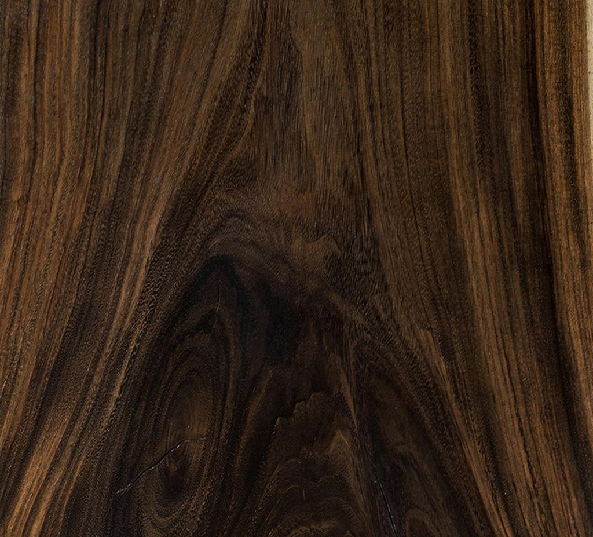
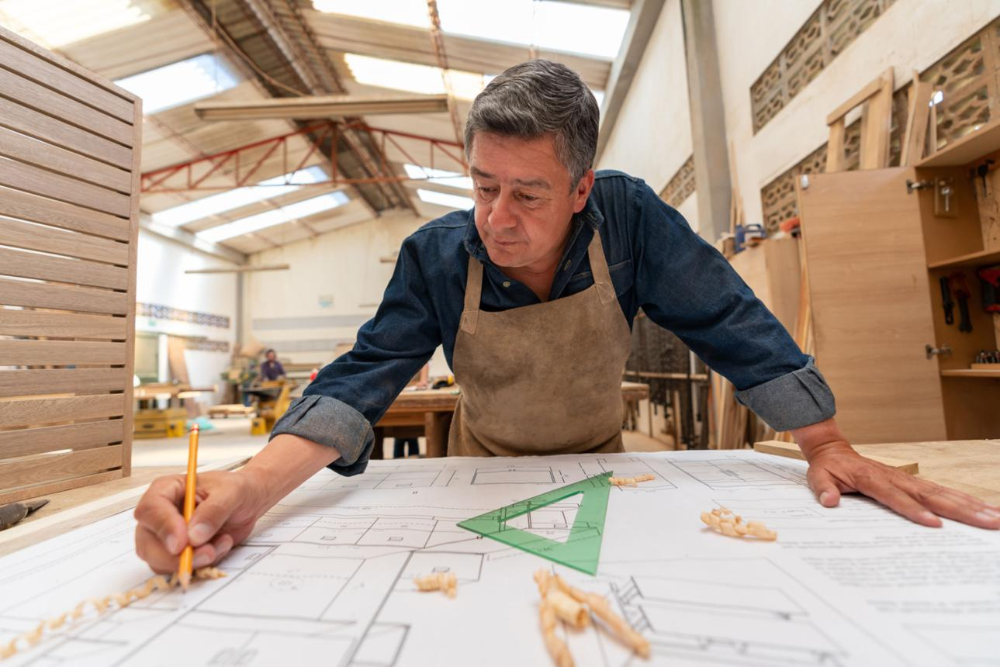

Warm interiors
Natural materials and quiet composition.
Selected work
A visual collection of furniture ideas, natural textures, material studies, and quiet interior moments.
Design language
Each concept starts with a balance of shape, material, comfort, and function. These studies show the atmosphere behind the Corda approach.
Natural materials and quiet composition.

Rounded forms for everyday living.

Grain, warmth, and natural variation.

Small decisions that shape the final piece.
From sketch to space
We look at how an object is used, how it feels in the hand, how it meets the floor, and how it sits alongside the rest of a room. The result is furniture that feels considered without feeling overworked.
Discuss a project →